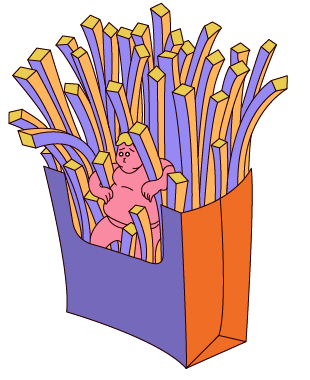
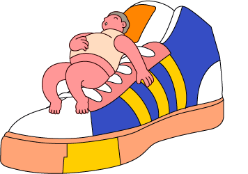

能量与肥胖
从食物中摄取的总热量多于人体消耗的热量，多出的部分会以脂肪的形式储存起来。所以最终人是否会变胖，起决定性因素的是单位时间内摄入的总热量。
三大宏量营养素提供热量的比例（碳水化合物：蛋白质：脂肪）建议为6:2:2或5:3:2或4:3:3。
能量摄入
人体的能量来源于食物摄入，食物中的三大产能营养素给人体供能。
能量单位：卡或千卡1千卡指1000克纯水的温度由15℃上升到16℃所需要的能量。1千卡=4.184千焦
产能营养素（主要是脂肪、碳水化合物、蛋白质，这三大产能营养素）
关于碳水、蛋白质、脂肪的简单科普
【碳水】对人体最主要的作用是提供能量，主要来源是粮谷类和块茎类食物，比如我们食谱中推荐的主食类像玉米、红薯、燕麦、意面这些。
【蛋白质】对我们人体有促进新陈代谢、调节激素平衡、免疫力等等作用。食物蛋白质可以简单分成动物蛋白和植物蛋白，如肉、鱼、蛋、乳这一些动物蛋白种类和结构更加接近人体的蛋白结构和数量，人体能更好地消化吸收，而且一般都含有人体必需的8种氨基酸(特别是蛋制品和奶制品)，所以动物蛋白质比植物蛋白质营养价值高。至于植物类蛋白中，最好的就是豆科植物的蛋白质，其中大豆蛋白质的种类和结构最优质，可媲美与动物蛋白，其中的大豆异黄酮对女生也很有好处的~

【脂肪】通常是甘油三酯，我们日常饮食的猪油、豆油、花生油、菜籽油这些都是。食谱里推荐的坚果也是拥有优质油脂的。脂肪到体内之后，会分解成甘油和脂肪酸，脂肪酸对我们的生殖系统、神经系统以及肾脏肝脏视力方面都有很重要的作用。所以人体需要脂肪酸，其中必需的脂肪酸人体不能自己合成，必须从食物中摄取。